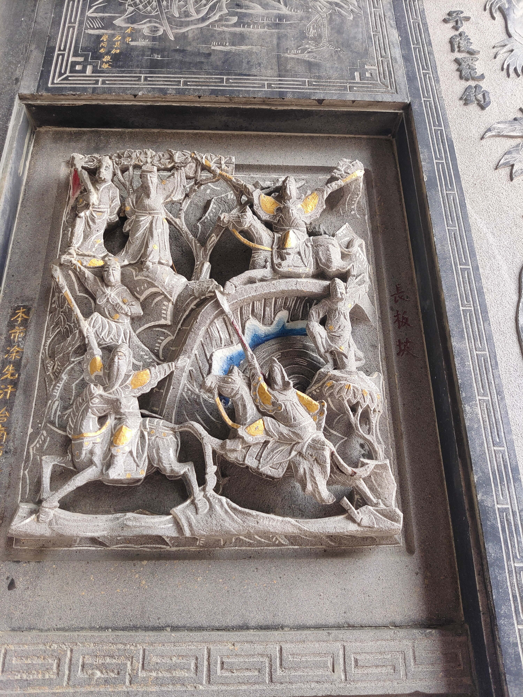

長板坡
會說話的石頭

圖 長板坡
明代小說《三國演義》杜撰，麋夫人和劉禪被曹軍圍困，麋夫人投井自盡，趙雲救出劉禪，途中斬夏侯恩獲青釭劍，懷揣劉禪七進七出曹軍。張飛在長坂橋斷後嚇阻曹軍，夏侯傑被張飛大喝驚嚇，墜馬而亡。曹操記起關羽昔日評論，下令慎進，但是張飛斷橋之後被曹操看破，曹操追劉軍至漢津，見劉備會合關羽，恐防中伏而撤退。京劇有劇目《長坂坡》，有時與《漢津口》連演，武生演員可「一趕二」，前演趙雲，後演關羽。
資料來源： https://reurl.cc/WOkGML